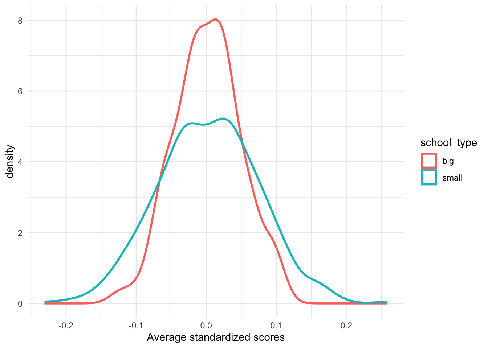
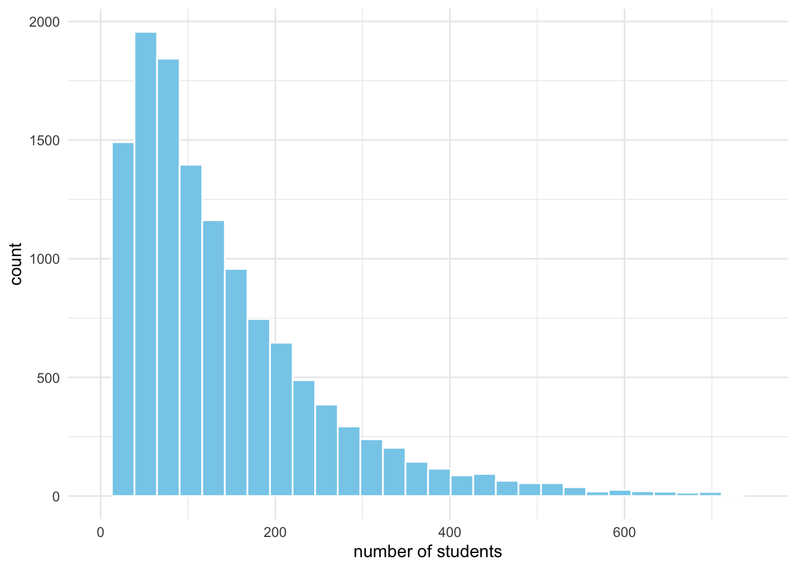
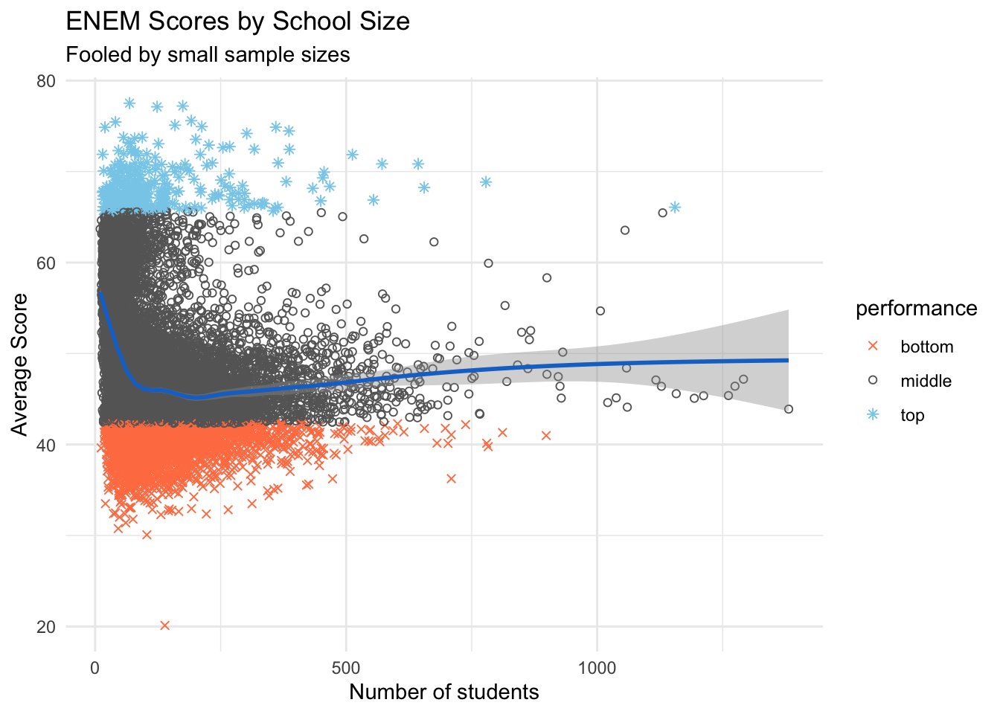
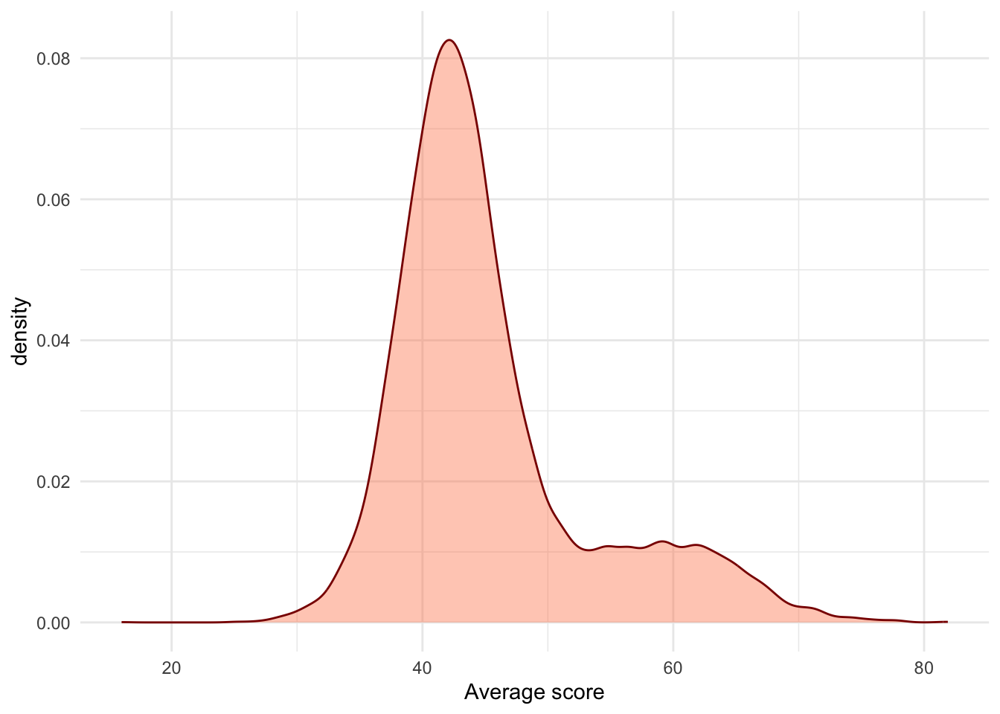
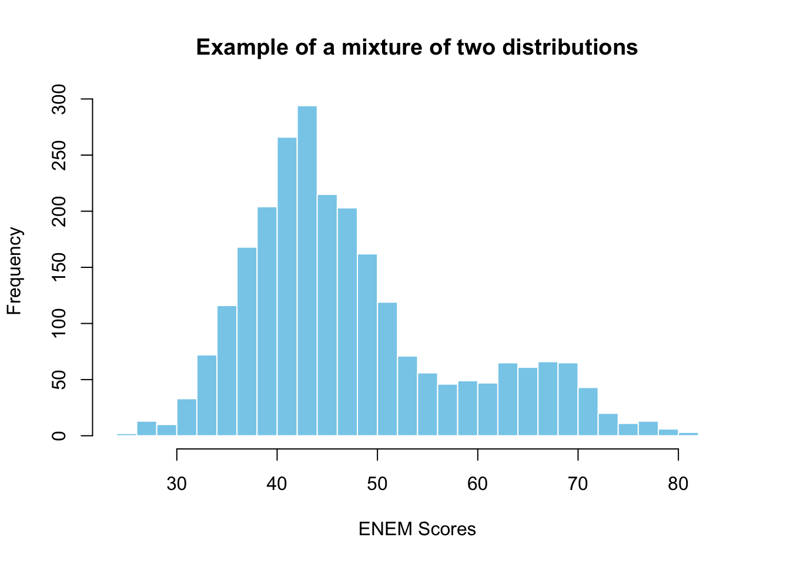
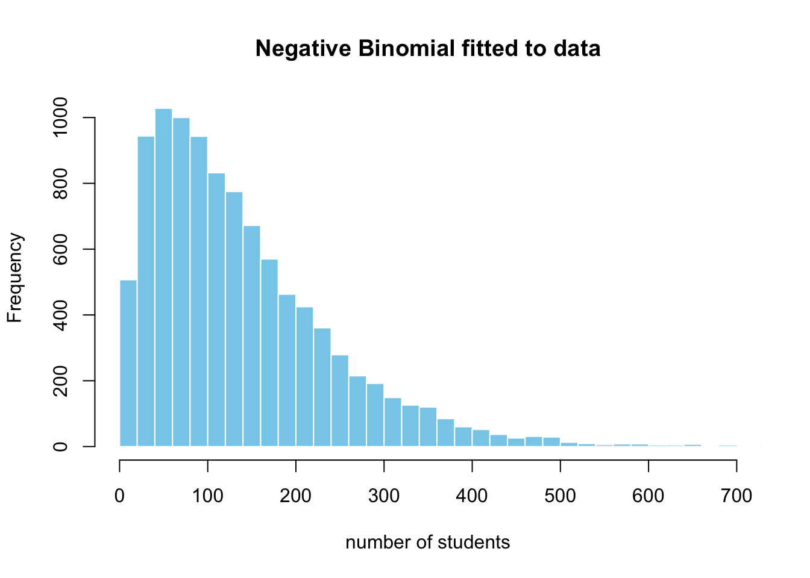
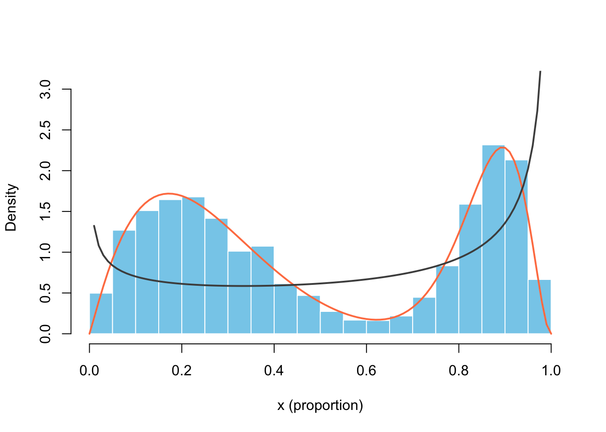
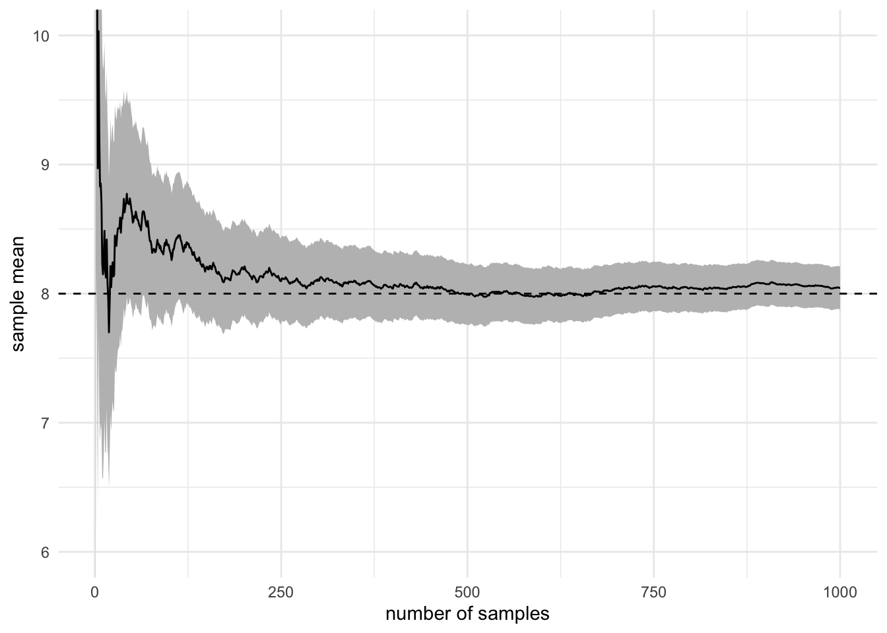
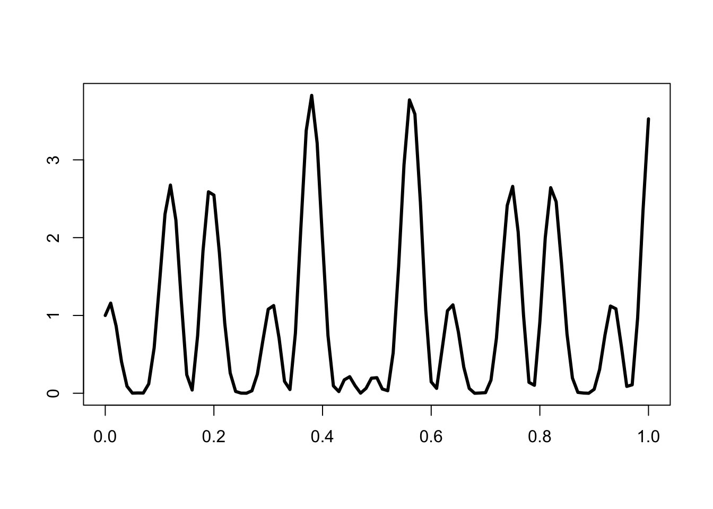
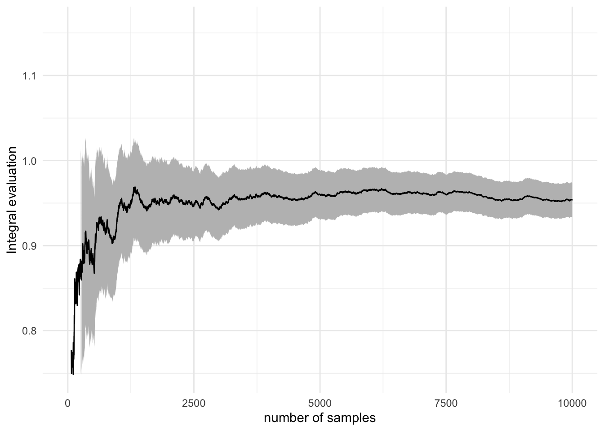

library(tidyverse)
set.seed(1234)The most dangerous equation
CLT, Accept-Reject, Monte-Carlo Integration
During the third lecture, I did a review of three theorems you have to know and be aware of their practical implications. We used simulations to aid our mathematical understanding of CLT (central limit theorem), LLN (weak law of large numbers), and universality of uniform.1
1 I suggest you run the code that we used in the lecture and understand the ideas of convergence in probability and convergence in distribution
2 This is what I meant in the first lecture when I said we can use simulation as a tool to learn statistics
We used the latter’s inverse method to generate exponential random variables, discussed how Gamma, Beta can be generated from it and how are they used in modeling. Similarly, we leveraged the relationship of Normal to distributions commonly used in statistics like Chi-squared, Student-t. This exercise allowed us to better understand what (implicit) assumptions are we making when working with these distributions.2
In this lab, we’ll apply the CLT to avoid common pitfalls when reasoning about an outcome under different sample sizes, use the LLN for numerical integration, and discuss in more technical detail about how can we generate random samples from common (and arbitrary) distributions.
The most dangerous equation (pitfalls of ignorance)
Howard Wainer’s article (your assigned reading for this week) points out to “equations”, but more exactly principles, being dangerous in the sense that we fall into reasoning pitfalls and make poor decisions if we’re not aware of them.3
\[ P(Y) = P(Y | k = 1) P(k = 1) + P(Y| k = 0) P(k = 0) \] I really like this idea put in an equation of total probability of looking foolish, \(Y\), where \(k\) is the knowledge of equation / principle or lack thereof. We can’t do much about the first term, which is motivated reasoning or ideological stubbornness, but we can reduce the second type of “danger” by knowledge and discipline.
3 This is precisely the reason we go over these fundamental ideas in probability and statistics which you encountered before, but don’t necessarily know how to apply them in practice
Howard Wainer chose to nominate the sampling distribution of the sample mean (de Moivre, CLT) as the most dangerous “equation”, because of how long it causes confusion, how widespread it is, and the serious consequences such ignorance has caused. He gives examples of:
- The variability in weight of medieval coins and the suspicion that someone stole or cheated in the amount of silver/gold
- We will have at least one case-study in which we apply hypothesis testing to quality control in manufacturing
- The rates of kidney cancer by U.S. county. Are people at more risk in the countryside?
- I will introduce the Gamma-Poisson model for modeling rates from Gelman’s Bayesian Data Analysis (3rd ed)
- The same ideas apply to crime rates and driving accidents
- Sex differences in the top of math scores, potentially caused by differences in variance between groups.
- In chess differences in top k ELO ratings can be explained by (initial) cohort sizes and dropout.
- We’ll analyze a dataset from UCLA Berkeley 1973 graduate admissions to quantify whether there was direct or indirect gender discrimination in some departments
- Generally, you should be very careful when drawing conclusions about the top or maxima.4
4 Take a look at this case-study from Calling Bullshit about aging and 100m running world records
The case-study we’re going to investigate today is about “The small schools movement” in the late 1990s U.S. You can find the full story and bibliographical references in the article, but I’ll present the short version.
Should U.S. split large schools?
As a result of heavy urbanization, the schools became bigger, more concentrated, and with more specialization in teaching. In the 90’s there was a growing dissatisfaction with the state of education, which still holds today, which lead to some initiatives, including Bill/Melinda Gates’ foundation financing5 and pushing for more small schools.
5 Order of magnitude of $ billions, just from the Gates
This idea was picked up by other organizations and sometimes resulted in million-dollar efforts of splitting large schools (e.g. over 1000 students) in smaller ones.
Stop and think: what are the hypotheses?
Find your closest colleague and discuss for 5 minutes what could’ve been the assumptions, hypotheses, reasoning, and evidence based on which these organizations concluded that it’s a good thing to split the big schools or encourage the creation of small ones.
For a series of papers and articles, Wainer collected data on around 1600 schools from the PSSA (Pennsylvania testing program), which has scores on a variety of subjects and broad sample of schools.6 Indeed, the small schools were over-represented in the top 50 schools according to the test scores (3% in sample vs 12% in the top). Could this be the empirical “evidence” that Gates foundation confirmed their beliefs with? Yes, I’m talking about confirmation bias, since this is a heavily loaded and divisive political topic.
6 If you plan to make a project or research paper on education, open datasets like PSSA will be invaluable, but it takes a lot of effort to clean it up and put it all together for modeling
Before loading and analyzing some data, let’s first do a simple simulation in which we exaggerate the differences in sample size (number of students in small \(n_s\) vs big schools \(n_b\)). We will generate individual scores from the normal distribution, which is not unreasonable, as most standardized tests are designed precisely that way.
Show simulation code
nr_stud_small <- 200; nr_small_schools <- 500
nr_stud_big <- 400; nr_big_schools <- 100
simulate_schools <- function(n_small, n_stud_small, n_big, n_stud_big) {
small_scores <- replicate(n_small, { rnorm(n_stud_small) |> mean() })
big_scores <- replicate(n_big, { rnorm(n_stud_big) |> mean() })
df <- bind_rows(
tibble(
scores = small_scores,
nr_stud = n_stud_small,
school_type = "small"
),
tibble(
scores = big_scores,
nr_stud = n_stud_big,
school_type = "big"
)
)
df
}
df <- simulate_schools(
nr_small_schools, nr_stud_small,
nr_big_schools, nr_stud_big
)
df |>
ggplot(aes(x = scores, color = school_type)) +
geom_density(linewidth = 1) +
labs(x = "Average standardized scores") +
theme_minimal()
Notice that we even assume the same population variance \(\sigma^2\), which might not be true in other practical applications when we compare groups.
Now, let’s look at some data from Brazil’s ENEM scores, which is the equivalent of SAT in U.S. or BAC in Romania. You can find instructions on how to download it from Chapter 3 of Matheus Faucre’s “Causal Inference for the Brave and True” or download it from my github repo.
df_scores <- readr::read_csv("data/enem_scores.csv") |>
mutate(
date = as.Date(paste0(year, "-01-01")),
school_id = as.factor(school_id)
)
df_scores |>
arrange(desc(avg_score)) |>
head(10)# A tibble: 10 × 5
year school_id number_of_students avg_score date
<dbl> <fct> <dbl> <dbl> <date>
1 2007 33062633 68 83.0 2007-01-01
2 2007 33065403 172 82.0 2007-01-01
3 2005 33062633 59 81.9 2005-01-01
4 2005 33065403 177 81.7 2005-01-01
5 2007 29342880 43 80.3 2007-01-01
6 2007 33152314 14 79.8 2007-01-01
7 2007 33065250 80 79.7 2007-01-01
8 2007 22025740 144 79.5 2007-01-01
9 2007 31311723 222 79.4 2007-01-01
10 2007 33087679 210 79.4 2007-01-01
Show visualization code
df_scores |>
filter(year != 2005) |>
group_by(school_id) |>
summarise(
number_of_students = mean(number_of_students, na.rm = TRUE),
avg_score = mean(avg_score, na.rm = TRUE)
) |>
mutate(
performance = case_when(
avg_score > quantile(avg_score, 0.975) ~ "top",
avg_score < quantile(avg_score, 0.225) ~ "bottom",
.default = "middle"
)
) |>
ggplot(aes(number_of_students, avg_score)) +
geom_point(aes(shape = performance, color = performance)) +
geom_smooth(method = "gam", se = TRUE, color = "dodgerblue3") +
scale_shape_manual(values = c(4, 1, 8)) +
scale_color_manual(values = c("coral", "grey40", "skyblue")) +
theme_minimal() +
labs(
x = "Number of students",
y = "Average Score",
title = "ENEM Scores by School Size",
subtitle = "Fooled by small sample sizes"
)

There are better ways to visualize this data, for example, we can split the x-axis (nr of students) into buckets, then display a boxplot or error-bars for each one, along with some of the outliers. We could also color the data points with a contrasting, continuous gradient and not discretize the scores.
c(rnorm(2000, mean = 43, sd = 6),
rnorm(500, mean = 65, sd = 6)) |>
hist(
col = "skyblue", border = "white", breaks = 40,
main = "Example of a mixture of two distributions",
xlab = "ENEM Scores"
)
Try to make your own simulation
After analyzing the data from Brazil, we got more information about the distribution for number of students in schools and the distribution of average scores.
Use that knowledge to make your own simulation with more realistic assumptions. For example, you will see below how we figure out which distribution is appropriate for the number of students per school.7
More specifically, you will now generate the number of students for a lot of schools (from the negative binomial), and for each school a vector of scores (from the mixture of gaussians) which you will summarize by taking the average. Will this lead to more realistic results?
7 But how did I pick the negative binomial? Knowledge and experience of distribution’s stories and their properties.
Show code for fitting data to the negative binomial
nr_stud <- df_scores |> filter(year == 2005) |>
sample_n(2000, replace = TRUE) |> pull(number_of_students)
negbinom_params <- MASS::fitdistr(nr_stud,
"negative binomial", method = "SANN")$estimate
rnbinom(10000, size = negbinom_params["size"], mu = negbinom_params["mu"]) |>
hist(breaks = 40, col = "skyblue", border = "white",
xlab = "number of students", main = "Negative Binomial fitted to data",
xlim = c(0, 700))
Here are the parameters we obtained by fitting the distribution to the data: 1.75 for size \(n\) and 139.7 for \(\mu\).
You should take away one big lesson from this case-study – that we should always remember the consequences of sample size and its variability. By using basic statistics and simulations, we can prevent mistaken conclusions from a naive data analysis and getting fooled by randomness. You might point out that this example is slightly trivial, but trust me, in practice the pitfalls become much more subtle.
Some pitfalls include sampling bias, differential non-response, dropout from study, right censoring, via confounders, mediators, or colliders.
These kinds of simulations have one more advantage, as we can check if different causal assumptions can generate the kinds of patterns we observe – even if we haven’t collected the data to verify it. You will get used to the situation when two different process models result in similar statistical patterns – which will force you to think very carefully about the underlying causal process in practice.
Drawing samples from distributions
In the lecture, we saw how important is universality of the uniform and inverse method to simulation. I also presented the stories, use-cases, and relationships of exponential, gamma, beta, normal, chi-squared, and student-t distributions.
Today we introduced the negative binomial, which can be represented as a mixture of gamma and Poisson. It was helpful in capturing the skewed distribution of the number of students in Brazil’s schools. In practice, you might encounter other, more exotic distributions like Weibull, inverse-gamma, Dirichlet, and Wishart – which have their own specialized roles and purposes.8
8 Weibull is used in survival modeling, Inverse-Gamma as a prior for the variance, Dirichlet in modeling proportions, and Wishart for generating random, symmetric covariance matrices
However, if you understand well the standard ones that I presented, you’re all good for the majority of applied problems. We will encounter each one in the context of the appropriate case-study and explain their properties in more detail, like we did with the binomial.
Methods for generating random samples
We’re still ignoring the details of how do we generate pseudo-random numbers from the uniform, but it will be useful to summarize what methods do we have for other distributions.
| general | specific | |
|---|---|---|
| direct | inverse method | custom algorithms |
| indirect | accept-reject | mixtures |
We have used the inverse method to simulate exponential random variables and a mixture for the remaining ones. The prior is a direct and general method, while the latter is an indirect and specific way, when theory tells us it can be represented by a mixture.
Both have a big downside of not being the most computationally efficient way, but are transparent and interpretable. Therefore, many software implementations, like R or Python’s RNG, often use specific algorithms for each distribution – which is more of a numerical methods problem.
At last, in statistical modeling we will sometimes need to simulate from really complicated random variables, which might not even have a closed-form representation, but we know the functional form up to a multiplicative constant.9 Thus, we’re out of luck with the direct and specific methods – but accept-reject algorithm and its generalizations in importance sampling are to the rescue in such situations.
9 Often, that constant is a nasty integral which we can’t solve by hand or at least it’s not practical to do so
Not covered on this website
These lectures and labs do not cover at all the details of how to draw random numbers via the inverse method and specific indirect methods.10 Please, consult with your professor about what is exactly required in the course from these topics.
But what can I recommend for sure if you need a deep-dive on the inverse method for discrete and continuous distributions, is this extensive tutorial by Alexandru Marioarei. Study and replicate the code for one or two distributions by using a different method, for example: Hypergeometric, Normal, Poisson (inverse and custom).
Regarding the pseudo-random number generation algorithms, you can check out Chapter 5 of Niels Hansen’s “Computational Statistics with R” and Chapter 3 of Tom Kennedy’s “Monte Carlo Methods - a special topics course”.
10 The reason for this is that I don’t have anything new or interesting to say here
While we can be ok with not being experts at the inverse method and efficient simulation of random variables, we will be missing a lot if we don’t have an understanding of the accept-reject approach. This is because it’s a building block in a sequence of increasingly complicated and powerful sampling methods like Importance Sampling, Metropolis-Hastings, Markov Chain Monte Carlo, Hamiltonian Monte Carlo, and Particle Filtering (Sequential Monte Carlo).
Without further ado, let’s look at the simplest form of Accept-Reject algorithm, a naive implementation, and apply it to an example.11 We’ll get the chance to analyze why it works and how to make it more efficient in more detail in future lectures.
11 This is an extension of the Beta example in Casella and Robert, pg. 53
Calibrating a classification model
Imagine you have developed a machine learning model which scores your customer’s propensity to unsubscribe in the next month (churn). You know that one group is loyal and another one at high risk of going to your competitors.
The problem is that your ML model gives you scores, not calibrated probabilities, and you can’t interpret them as such for downstream decisions (like offering a promotion). So, you leave aside a validation dataset, in which you count the number of scores / predictions for each bucket / decile of true frequency of unsubscription.
What you need now is a model which maps the scores to probabilities. In practice, you would use something like an Isotonic Regression or a Mixture Model, but let’s not ruin a good story.
So, before running the calibration, you would like to know if your method works in principle, on some simulated data. First, you need to draw samples from the mixture model below and luckily we can do it in R with 0.6 * rbeta(10000, 2, 6) + 0.4 * rbeta(10000, 18, 3). But what would we do if we didn’t have it? This seems a bit too intimidating for the inverse method.
\[ f(x) = w Beta(x | a_l, b_l) + (1 - w)Beta(x|a_r, b_r) \]
Show code for Accept-Reject method
set.seed(16173)
nr_sim <- 1e4; g_a <- 0.7; g_b <- 0.4
f <- function(x) { 0.6 * dbeta(x, 2.1, 6.3) + 0.4 * dbeta(x, 18, 3) }
M <- optimize(
f = function(x) {f(x) / dbeta(x, g_a, g_b)},
interval = c(0, 1), maximum = TRUE
)$objective + 0.02
u <- runif(nr_sim)
y <- rbeta(nr_sim, g_a, g_b) # generation from g
x <- y[u < f(y) / (dbeta(y, g_a, g_b) * M)] # accepted subsample
hist(
x, breaks = 30, probability = TRUE,
xlab = "x (proportion)", main = "",
col = "skyblue", border = "white",
xlim = c(0, 1), ylim = c(0, 3.1)
)
curve(f(x), add = TRUE, lwd = 2, col = "coral")
curve(dbeta(x, g_a, g_b), add = TRUE, col = "grey30",
lwd = 2)
This story is not that far from reality. If we manage to find the parameters of the mixture components which fit the data well - for any ML model score we can assign its probability.
What does the code above do? For the Accept-Reject algorithm, we need a lot of uniformly distributed samples \(U\), an instrumental (proposal) probability density function \(g(x)\), which has the same support as our unknown PDF \(f(x)\). We should pick a \(g()\) with available simulation methods and which covers the support well.
We could choose the uniform, but I settled on a \(Beta(0.7, 0.4)\) in order to make sure we have enough “attempts” at the extremes (near 0 and 1). We generate the same number of \(Y\) from \(g\) and accept only those which satisfy the following condition:12
12 You will see more performant and sophisticated implementations, but I think it’s better to start as simple as possible
\[
U \le \frac{1}{M} \frac{f(Y)}{g(Y)}
\] The constant \(M\) should be an upper bound on the ratio of \(f(x) / g(x) \le M \quad \forall x\). I chose the approach of Casella and Robert, who find the maximum of that ratio with optimize(), but we would lose just in efficiency, not accuracy if we picked a larger number.
Monte Carlo Integration
One of the immediate applications of the law of large numbers that I mentioned in the lecture was Monte Carlo integration, which is an alternative to traditional numerical methods. In the case our integrals have the following form and we can easily simulate from the density \(f(x)\), we’re in luck.13 Otherwise, we might need to resort to indirect and more advanced methods like Importance Sampling.
13 You can read in this Computational Statistics course why this form might not be that restrictive after all.
\[ \mathbb{E}_f[h(X)] = \int_\chi h(x) \cdot f(x) dx \]
\[ \bar h_n = \frac{1}{n} \sum_{j=1}^n h(x_j) \]
But first, as with any approximation method, we need a way to assess its accuracy. In our case, we can give probabilistic confidence intervals via the central limit theorem. More interesting are the concentration inequalities (remember Hoeffding from the lecture), which answer the question of how large \(n\) has to be if I want my error to be less than a threshold \(\tau\) (e.g. \(\epsilon \le 10^{-4}\)) with probability 0.999?14
14 You can check out this question in more details in Chapter 7 of Niels Hansen’s “Computational Statistics with R”
Show code for the convergence of a Gamma r.v.
set.seed(12321)
n <- 1000
x <- rgamma(n, 8)
mu_hat <- cumsum(x) / 1:n # cumulative average
sigma_hat <- sd(x)
ggplot(mapping = aes(1:n, mu_hat)) +
geom_ribbon(
mapping = aes(
ymin = mu_hat - 1.96 * sigma_hat / sqrt(1:n),
ymax = mu_hat + 1.96 * sigma_hat / sqrt(1:n)
), fill = "gray") +
coord_cartesian(ylim = c(6, 10)) +
geom_line() +
geom_hline(yintercept = 8, lty = "dashed") +
labs(x = "number of samples", y = "sample mean") +
theme_minimal()
Despite the usefulness of integration in finance, economics, statistics, and natural sciences, it is hard to avoid didactic examples in a simulation course. I will spare you from estimating the constants \(\pi\), \(e\) or from wild integrals for which it’s not clear what is the story. So, let’s look at this example from Casella and Robert, then come back to the topic of integration in the context of statistical modeling and MCMC.15
15 They also give a nice example of Gaussian CDF \(\Phi\) and normal-Cauchy Bayes estimator
\[ \int_0^1 [cos(50x) + sin(20x)]^2 \]
set.seed(12321)
nr_sim <- 1e4
h <- function(x) { (cos(50*x) + sin(20*x))^2 }
x <- runif(nr_sim) |> h()
est_int <- cumsum(x) / 1:nr_sim
est_err <- sqrt(cumsum((x - est_int)^2))/1:nr_simcurve(h, xlab="", ylab="", lwd=3)
Show visualization code
y_lims <- mean(x) + 20*c(-est_err[nr_sim], est_err[nr_sim])
ggplot(mapping = aes(1:nr_sim, est_int)) +
geom_ribbon(
mapping = aes(
ymin = est_int - 1.96 * est_err,
ymax = est_int + 1.96 * est_err
), fill = "gray") +
lims(y = y_lims) +
geom_line() +
labs(x = "number of samples", y = "Integral evaluation") +
theme_minimal()
We won’t cover differential equations solvers
In some fields, systems of ordinary differential equations (and not only) are tremendously important. You encountered some simple ones in your Cybernetics classes and will study the dynamics of economic models in your third year class.
At this point, you should know that there are reliable numerical solvers in R, Python, and other languages. They use methods like 4th order Runge-Kutta for ODEs and Euler-Maruyama for stochastic differential equations.
Homework and Study Resources
The purpose of this week’s homework and readings is to get a deeper understanding of the law of large numbers, central limit theorem, and probability distributions.
- Read the lecture about three core theorems in simulation: LLN, CLT, and Universality of Uniform. Run the code snippets you encounter as a warm-up for the following exercises.
- Read this famous article by Howard Wainer - “The most dangerous equation” (Princeton university press, 2009)
- Do your own simulation based on Brazil’s ENEM scores by school, using the gaussian mixture and negative binomial distribution.
- Take the list of other examples from the beginning of this lab and Wainer’s paper, write a paragraph for each one on how would you do simulations to assess the claims and where could you find the data to verify your assumptions